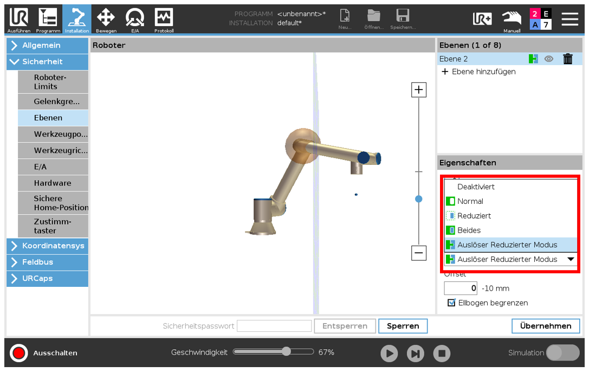
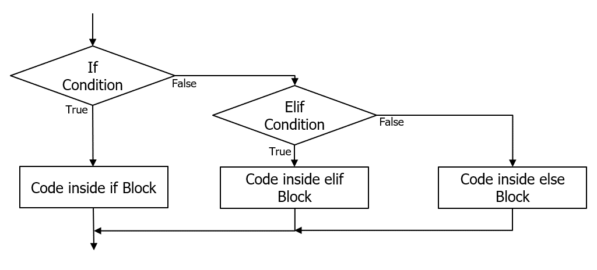
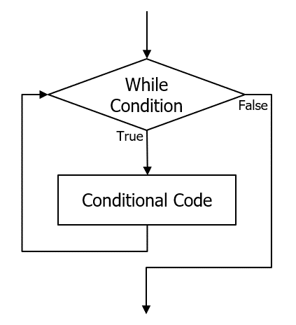
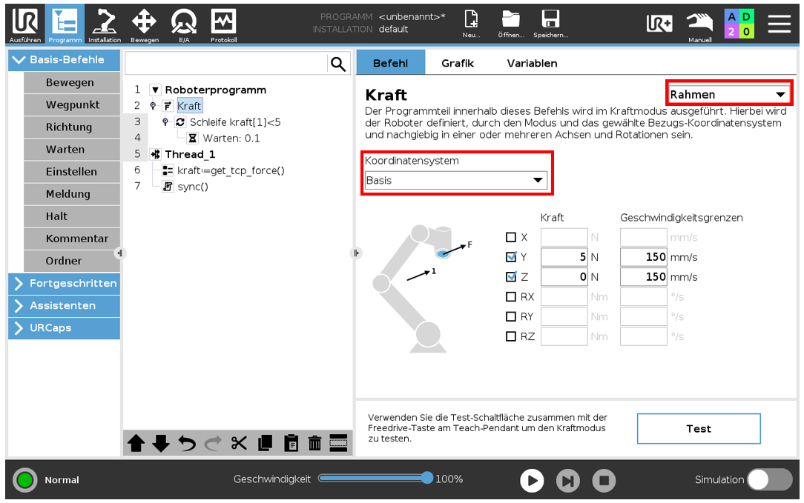
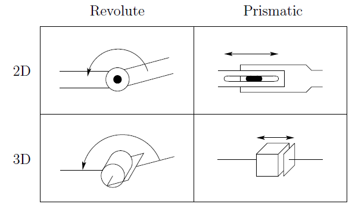

Willkommen zur ZF-Robotik
Bitte wählen Sie.
Frage
...?
Kapitel 1
Rotationsmatrix
Die Rotation eines Körpers im Raum ist ein essentielles Thema für Ingenieure in jeglichen Bereichen. Auch auf Enzyklopedien gibt es einiges über dieses Thema heraus zu finden (Euler,Drehmatrix).
Die wissenschaftliche Theorie, die man über dieses Thema nachlesen kann, ist grenzenlos. Aber um wirklich zu verstehen was passiert, braucht man eine visuelle Veranschaulichung, damit man seine Denkweise daran anpasst.
XYZ-Konvention
Die Rotationsmatrix besteht aus 3 einzelnen Matrizen, die jeweils für Z-Rotation, Y-Rotation und X-Rotation stehen.
Multipliziert man diese Matrizen miteinander, ergibt sich die finale Rotationsmatrix.
Für den Startbildschirm, bitte Klicken.
Kapitel 2
Rechte Hand Regel
Die rechte Hand ist, wie in vielen anderen Bereichen der Technik, auch hier ein gutes Werkzeug um Koordinatensysteme schnell zu veranschaulichen.
Daumen - X-Achse
Zeigefinger - Y-Achse
Mittelfinger - Z-Achse
Drehsinn
Für den Drehsinn benutzt man auch die rechte Hand, genau wie in der Elektrotechnik. Der Daumen zeigt in Richtung des Vektors und die Richtung der anderen Finger gibt die positive Drehrichtung vor.
Für den Startbildschirm, bitte Klicken.
Kapitel 3
Koordiantensystem
In der Robotik gibt es einige Koordiantensysteme, die man berücksichtigen muss. Es gibt den Bezug zur Basis, zum TCP oder auch zu einer selbst definierten Ebene.
Diese Abhängigkeiten sollte man für jeden Fahrbefehl festlegen, damit sich der Roboter nicht auf unerwünschte Weise bewegt.
Drehen Sie immer in der Reihenfolge: 1, 2 und dann 3.
Mittels 4(x), 5(y) und 6(z) verschieben Sie den Ursprung global im Raum.
Nach Verschieben/Verdrehen des Koordinatensystems, entfernen Sie den Haken bei "kos", um das Kardan-System einzublenden.
Hier wird um die jeweilige Achse rotiert.
Getestet und funktionstüchtig unter Google Chrome(version 81.3)
Für den Startbildschirm, bitte Klicken.
Kapitel 4
TCP
Der TCP (tool center point) stellt den vordersten Punkt des Roboterarms, den Flansch, dar.
Wenn ein Effektor montiert ist, muss der TCP anhand dessen kalibriert werden.
Der TCP ist der Hauptreferenzpunkt des Roboters und anhand dessen, werden z.b. Wegpunkte gespeichert.
Bei Schweiswerkzeug ist dies der Aufsetzpunkt und bei Greifern ist es der Mittelpunkt der Verbindungslinie der Greiferbacken.
Ebenen
Die Ebenen, die man selbst festlegen kann, können auf viele Weisen benutzt werden.
Sie können benutzt werden, um Wegpunkte im Bezug auf die Ebene festzulegen, aber auch als Sicherheitsebenen.
Sicherheitsebenen stellen eine 'Barriere' dar, die der Roboter nicht durchstoßen soll. Dies kann man auf einige Arten festlegen.
•"Normal" → kein Durchgang des TCP/Ellbogen möglich im normalen Betrieb
•"Reduziert" → kein Durchgang des TCP/Ellbogen möglich im reduzierten Betrieb
•"Beides" → kein Durchgang des TCP/Ellbogen möglich
•"Auslöser Reduzierter Modus" → beim Durchgang der Ebene wird in den Reduzierten Modus umgeschaltet

Für den Startbildschirm, bitte Klicken.
Kapitel 5
Bausteine im GUI
Unterprogramm-Baustein
Erstellen eines neuen Unterprogramm muss in die oberste Programmebene.Aufrufbar an beliebiger Stelle im Roboterprogramm; nützlich für häufig gebrauchte Programmsequenzen.
Dieser Abschnitt wird auch nur einmal durchlaufen.
Thread-Baustein
Parallellaufendes Programm; Startet mit Hauptprogramm (nicht mit der Vor-Start-Sequenz).nützlich um in eine Variable einen aktuellen Wert zu schreiben (z.B. Force/TCP Position).
Am Ende vom Thread sync() (mittels Baustein „Script“) oder wait-Befehl einfügen.
Event-Baustein
Ähnlich wie Thread, startet jedoch erst, wenn die definierte Bedingung erfüllt ist.If-Baustein
Funktioniert mit der gleichen Logig wie das "if" bei jeder Programmiersprache.Else kann leer gelassen werden und es sind beliebig viele elseif-Blöcke einfügbar.

Schleife-Baustein
Um eine Schleife zu kreieren kann man die gängigen Befehle "for" und "while" benutzen.Je nach Bedingungen für diese Schleifen, kann man auch Endlosschleifen programmieren.

Switch-Case
Fälle (Cases) dürfen nur Integer-Werte sein
Kraft-Baustein
Hier fährt der Roboter auf Kollision, bis er auf eine gewisse Widerstandskraft trifft. In dem Baustein kann man Richtung und Geschwindigkeit festlegen.Kaftfahrten sollte man mit einer Schleife mit eindeutiger Bedingung koppeln, damit der Roboter auch wieder auf gewünschte Weise aufhört oder dort stoppt, wie man es will
Der Modus "Rahmen" wird empfohlen, da dieser angenehm zu konfigurieren ist.
ACHTUNG: Kraftbefehle innerhalb einer Endlosschleife führen zu Problemen!

Für den Startbildschirm, bitte Klicken.
Kapitel 6
Gelenktypen
Gelenke verbinden die verschiedenen Armteile des Roboters und das typischerweise translatorisch (prismatic) oder rotatorisch (revolute).
Es gibt noch Revolvergenke, welche auf eine besondere Art drehen, jedoch sind diese selten verbaut.
Je nach dem wie man diese Gelenke miteinander verkettet, erreicht man unterschiedliche Freiheitsgrade in dem Roboterarm.
Der Roboter kann bis zu 6 Freiheitsgraden haben.
• Translatorisches Gelenk: erlaubt eine relative, lineare Bewegung zwischen zwei Armteilen.
• Rotatorisches Gelenk: erlaubt eine relative, rotatorische Bewegung zwischen zwei Armteilen.

Für den Startbildschirm, bitte Klicken.
Kapitel 7
Kamera-Kalibrierung
Um eine Kamera zu kalibrieren, schließt man diese mit Ethernet-Kabel an den PC oder einen Microcontroller.
Nach der Verbindung mit den richtigen IPs und der Installation der dazugehörigen Software, kann die Kamera mittels Smartgrid kalibrieren.
Dies berechnet die Abhängigkeit zwischen Roboterkoordinaten und Kamerakoordinaten.
Wenn die Kamera ein Objekt erkennt und dessen Koordinaten hat, werden diese in die Koordinaten des Roboters umgerechnet und der TCP kann sich durch einen Fahrbefehl dort hinbewegen.
Für den Startbildschirm, bitte Klicken.
Kapitel 8
Singularität
Das Wort "Singularität" hat viele Bedeutungen, doch in die Robotik steht es für ein Problem, welches jeden Roboter betrifft.
Die Bewegung des Roboterwerkzeuges per inverser Kinematik führt zu einigen Besonderheiten. Während sich aus einer bestimmten Stellung der Achsen eindeutig eine Position
des Werkzeuges ergibt, ist die Stellung der Achsen für eine bestimmte Werkzeuglage nicht immer eindeutig.
Das System ist rechnerisch mehrdeutig.
Je nach Lage des Zielpunktes und der Mechanik des Roboters gibt es oft mehrere Achskonfigurationen, die zur gewünschten Werkzeugposition führen.
Die Auswahl der geeignetsten Konfiguration ist Aufgabe des Programmierers.
Die Steuerung muss dann sicherstellen, dass diese Konfiguration während der Bewegung möglichst lange beibehalten wird.
Der Wechsel zwischen zwei Konfigurationen kann sonst dazu führen, dass für eine minimale Werkzeugbewegung eine sehr große Bewegung des gesamten Roboters stattfindet.
Diese unerwartete Bewegung kostet Zeit und ist oft nicht kollisionsfrei möglich.
Bei manchen Roboterkinematiken (z. B. 6-achsiger Gelenkarmroboter) gibt es Raumpunkte, die zu sogenannten Singularitäten führen.
Eine Singularität ist dadurch gekennzeichnet und erkennbar, dass zwei Achsen des Roboters kollinear (fluchtend) sind.
Beispiele
Eine typische Konfiguration mit Singularität ist die Überkopfstellung des Werkzeuges. Hier fluchten Achse 1 und Achse 6. Die Steuerung kann eine auszuführende
Rotation um die Senkrechte nicht eindeutig Achse 1 oder Achse 6 zuordnen.
Eine andere Konstellation ist beim Nulldurchgang der Achse 5 gegeben.
Hier fluchten Achse 4 und Achse 6. Hier gibt es unendlich viele Achsstellungen, die zur gleichen Werkzeugstellung führen bzw. Bewegungsbahnen,
bei denen mehrere Achsen mit unendlicher Geschwindigkeit gegeneinander bewegt werden müssten.
Einige Steuerungen brechen das Programm sicherheitshalber beim Durchfahren eines solchen Punktes ab.
Anbei ein Video, wechles die Problematik sehr gut veranschaulicht.
Für den Startbildschirm, bitte Klicken.
Das Quiz ist vorbei.
Anzahl der richtigen Antworten: 0 von 0